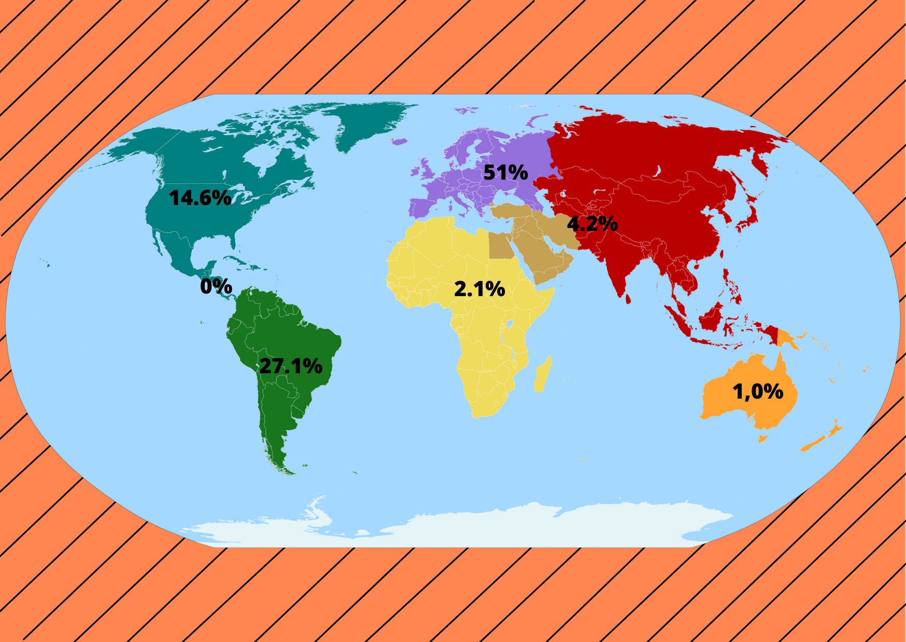
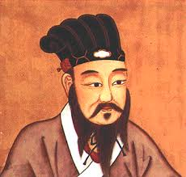

<html>

<head>
    <title > Lupa da Diversidade </ title >

</head>

<body>    
  <section id="imgeco"> 
        <h3 class="centralizado"> MAPAS: </h3>
       
        <div class="justificado"> 
            
            <h4>MAPA DOS CONTINENTES</h4>
        </div>

  </section>

    
    
  <section id="selecao" class="destaque2">
        <br>
        <h3 class="centralizado">COLONIALISMO</h3>

        <div class=" coluna justificado">
        
            <p>O colonialismo era a ocupação de territórios, sendo território composto
                por política, cultura, economias, religiosidades, entre outras. É uma forma de
                imposição de autoridade que pode acontecer de forma forcada ou negociada
                com o objetivo de possuir novas terras para uso agrícola ou simplesmente para
                estabelecer novos pontos de comercio. </p>
           <p> Um grande exemplo de colonialismo foi quando os portugueses chegaram
            das grandes navegações no Brasil em 1500 e encontraram outras pessoas que
            já habitavam ali, os indígenas. O contato entre os portugueses e indígenas foi
            relatado como pacifico, houve troca de presentes pelas duas partes, e mais
            adiante com um sistema de administração implantado em 1530 chamado de
            política de colonização, seria a troca seria de presentes por serviço braçal. </p>
            <p> Em 1530 se iniciou no Brasil colônia, que é importante ressaltar que a
                sociedade era capitalista, por isso que essa época é chamada de capitalismo
                comercial ou também como mercantilismo. Logo no descobrimento do brasil, a
                economia se baseava a economia na monocultura, latifúndios e escravidão, E o
                que mais define o capitalismo era os engenhos de cana de açúcar, Caio Prado
                Junior diz em seu livro “História Econômica do Brasil” que os engenhos de cana
                de açúcar foram nossas primeiras empresas, o açúcar que era produzido no
                brasil, era tanto para mercado interno quando para o externo
                São consideradas comoddities agrícolas, que é o material que é submetido a um
                grau mínimo de industrialização</p>
            <p>Um exemplo atual para o colonialismo são os Norte americanos que se
                desenvolvem em países subdesenvolvidos, por interesses capitalistas, para
                obter recursos naturais ou para crescer economicamente. Acreditamos que por
                mais cruel que o colonialismo possa ter sido por ter muitas vezes acabado com
                certas culturas, pelo a padronização que seus povos colocavam, ele foi a base
                para o que temos hoje como divisões de territórios, linguagens e diferenças de
                culturas, politica entre outros</p>
            <p> O Eurocentrismo também é um elemento histórico que ainda é possível
                encontrar nos dias atuais, também possui o colonialismo. É a concepção da
                cultura europeia sendo colocada como a principal, e superior a todas. Esse
                movimento teve inicio na época das grandes navegações, liderados por Portugal
                e Espanha, no final da época da idade media. Os europeus estavam formando
                países, que eram liderados por um rei absolutista, com modelo econômico
                voltado para o enriquecimento de suas nações, o mercantilismo, iniciando a
                idade moderna. Os europeus super interessados para fazer comercio com o
                Oriente por causa de suas famosas e cara especiarias, eles decidiram ir até o
                Oriente, mas por um caminho marítimo diferente da rota tradicional porque suas
                rotas padrão foram bloqueadas pelos turcos otomanos na tomada de
                Constantinopla em 1453. Por essa rota marítima não tradicional, eles foram
                descobrindo lugares novos e praticando o colonialismo. </p>
            <p> Logo uma oposição colonial aconteceu, os Norte americanos foram
                considerados atrasado pelos Europeus, então eles foram introduzidos a sua
                língua, costumes e religião com o objetivo de salva-los desse tipo “selvagem” de
                vida. Outra oposição colonial no final do sec. XIX foi o neocolonialismo, em que
                nações imperialistas ricas pelas a industrialização na segunda revolução
                industrial, repartiram entre eles mesmo os países da África, Ásia e Oceania. As
                nações que foram dominadas pelo os europeus, não estavam cientes se queriam
                esse “Progresso europeu” e foram reprimidos da mesma forma.</p>
            <p> A primeira imagem que vemos ao imaginar alguém descrito como rico,
                com condições e com poder, é um homem branco. Justamente por termos esse
                preconceito enraizado na nossa sociedade ate nos dias atuais. O Brasil foi o
                ultimo pais do continente americano a abolir a escravidão, não da para saber
                exatamente quando o racismo começou, mas essa ideologia foi adquirida por
                volta dos séculos XVI e XVII por conta da colonização do continente americano.
                Como os europeus tinham essa visão eurocêntrica, acreditavam que eram
                melhores, já os negros e indígenas não eram vistos como seres humanos, mas
                sim animais. Até 1888 os negros eram escravizados, e quando tiveram sua
                liberdade reconhecida, foram alvo para ofensas como “preguiçosos” porque não
                sabiam viver sem ser servindo a outra pessoa, passaram a vida toda vivendo
                pelos outros e sofrendo mais do que os livros podem nos relatar, foram jogados
                em liberdade e alvo de comentários maldosos. Então assim se iniciou o estigma
                de que negros não gostam de trabalhar. Ate esse momento todos os lugares,
                pessoas ainda possuíam o mesmo pensamento racista.</p>
            <p> Para que podermos fazer todas as “engrenagens” da sociedade funcionar,
                precisamos de leis, ainda mais em épocas tão difíceis, mas as leis dessa época
                eram feitas com baseamento europeu, que tinha como protegidos: homens,
                brancos e cristãos. Sem ter onde morar, libertos sem nada, os negros foram
                morar em morro, onde ninguém mais queria morar, que formaram as favelas.</p>
            <p>Hoje em dia tratam as pessoas negras como se elas tivessem algum tipo
                problema, ou caráter duvidoso. Mas obviamente não, a única coisa que muda é
                a melanina da pele, alterando somente algumas características físicas, mas que
                não afeta os órgãos como o cérebro e o coração.</p>
            <p>Mesmo nos dias atuais ainda continua sendo difícil, estudos apontam
                medo, aos brancos serem comparados com os negros, de ter as mesmas
                profissões e frequentar os mesmos lugares, mas não é só pessoas conscientes
                de suas palavras e ações que são racistas, todos que usam palavras como
                “Denegrir”, “Serviço de preto”, “Mulato”, entre outros são expressões racistas que
                estão tão enraizados em nossa sociedade que mesmo inconscientemente esta
                presente as descriminações raciais.</p>
            <p>Podemos nos basear em dados estáticos como o IBGE para ver
                claramente a diferença entre brancos e negros, desde sempre negros são os
                com maior numero de desempregados, com menor renda mensal e
                alfabetização. Enquanto o branco tem maiores salários sofrem menos com
                desempregos e são a maioria que frequentam o ensino superior. São historias,
                condições e lutas diferentes.</p>

        </div>

    </section>

    
   <section id="selecao">
        <br>    

         <div class=" coluna dois">
            <h4>Confúncio</h4>
            <p> Nasceu entre 552 a.c e 489 a.c foi pensador e filosofo chinês do Périodo das Primaveras e Outonos.
                 Suas principais ideias era Ética, 
                Filosofia Social mas sua ideia mais notável doutrina era Confucionismo.</p>
            <p>  A filosofia dele falava sobre uma moralidade pessoal e governamental, os procedimentos corretos nas relações sociais, a justiça e a sinceridade.
                 Ele prega principalmente três virtudes fundamentais: a Bondade, 
                que gera alegria e paz interior; a Ciência, que permite dissipar as duvidas e a Coragem, que afasta todas as formas de medo.</p>
            <p>  Segundo Confuncio ética é defende uma conduta virtuosa permite inspirar aos demais pela sua força moral. Esse são alguns autores que estudamos sobre a questão da ética citada no texto,
                 Aristóteles, Kant e o Utilitarismo são vertentes fundamentais que sintetizam a essência do que é estudar Filosofia, mais especificamente o ramo da ética.</p>

        </div>

        <div class="coluna tres">
            
        </div>

    </section>
    
       
</body >
</html >